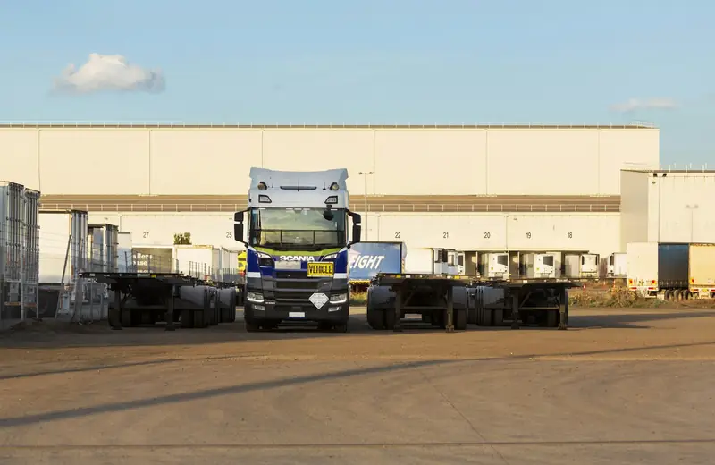
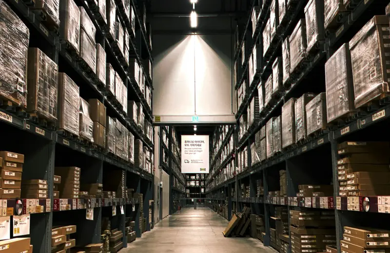
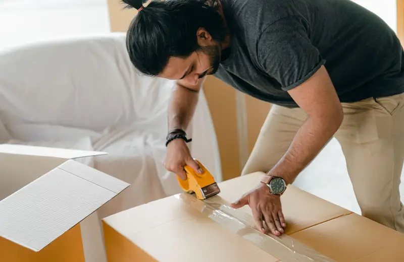
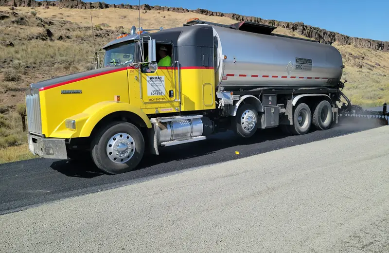
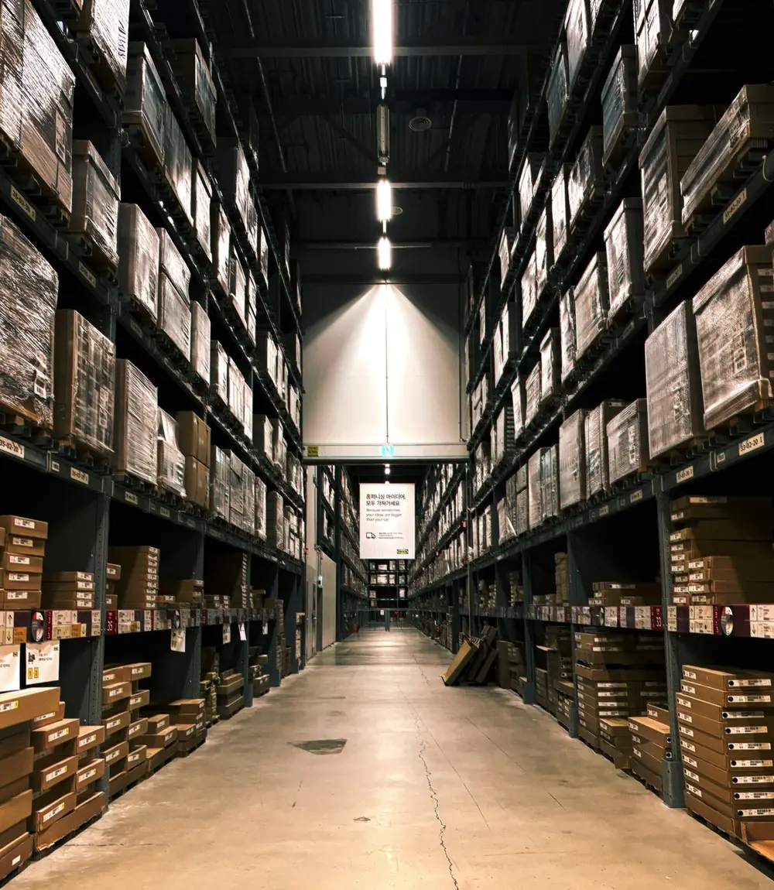
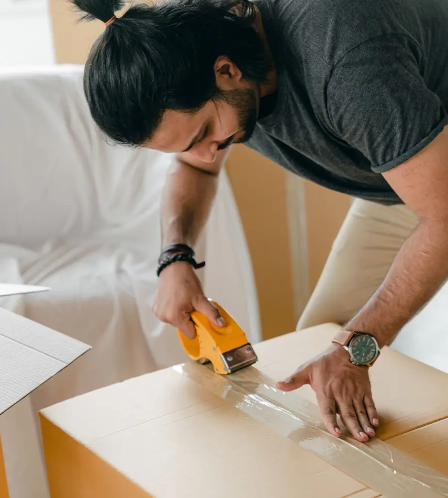
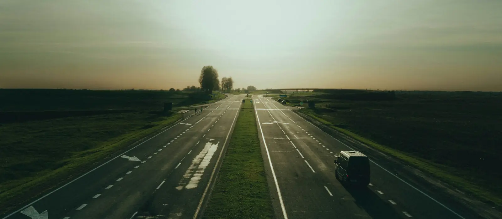
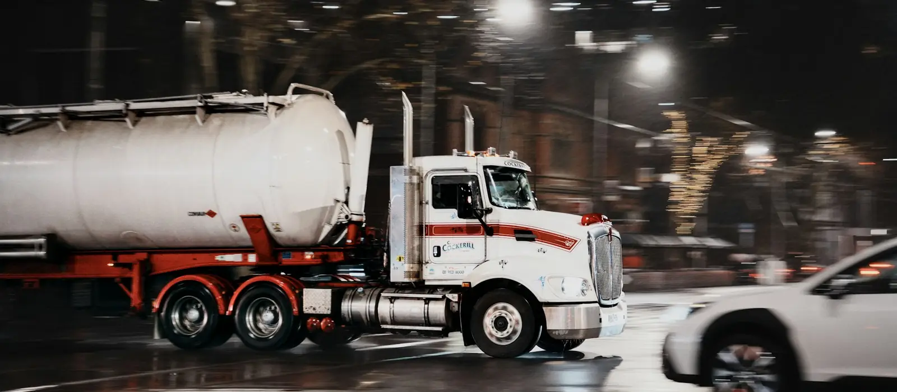

Yükünüz yolda, aklınız rahat
KADIOĞLU LOJİSTİK; yurt içi ve uluslararası karayolu taşımacılığından depolama, paketleme ve gümrüklemeye kadar tüm lojistik ihtiyaçlarınızda çözüm ortağınız.
- Komple & parsiyel
- İthalat / ihracat
- Depolama & gümrük
- Paketleme & ambalaj
- Gaziantep 5. OSBSanayinin kalbinde, ulaşılabilir merkez
- Komple & ParsiyelYüke uygun araç ve kapasite planı
- Uluslararası Karayoluİthalat, ihracat ve transit tır taşımaları
- Belge & GümrükCMR, menşe ve gümrük koordinasyonu
- Hızlı İletişimTelefon, WhatsApp ve e-posta ile doğrudan
Karayolunda uçtan uca lojistik çözümleri
Yükünüzün cinsi, hacmi ve rotası ne olursa olsun; doğru aracı, doğru güzergâhı ve doğru süreci birlikte planlıyoruz.

Karayolu Taşımacılığı
Komple araç (FTL) ve parsiyel (LTL) seçenekleriyle, yükünüze uygun araç tipinde kapıdan kapıya yurt içi karayolu taşımacılığı.
Detaylı bilgiUluslararası Karayolu Taşımacılığı
Avrupa, Orta Doğu, Kafkasya ve Orta Asya yönlerinde ithalat, ihracat ve transit yükleriniz için tır ile kapıdan kapıya uluslararası karayolu taşımacılığı.
Detaylı bilgi
Depolama ve Antrepo
Kısa ve uzun süreli depolama, stok yönetimi, elleçleme ve gümrük gözetiminde antrepo hizmetlerinin planlanması.
Detaylı bilgi
Paketleme ve Ambalaj Hizmetleri
Paletleme, streç film, ahşap sandık/kasa, köşebent ve koruyucu ambalajla yükünüzü taşımaya hazırlayan endüstriyel ve ihracata uygun paketleme çözümleri.
Detaylı bilgiGümrükleme ve Gümrük Müşavirliği
İthalat, ihracat ve transit işlemlerinde belge hazırlığı, beyanname ve mevzuat süreçlerinin yetkili gümrük müşavirleriyle koordinasyonu.
Detaylı bilgi
Tehlikeli Madde (ADR) Taşımacılığı
Kimyasallar, yanıcı maddeler ve diğer tehlikeli yükler için mevzuata uygun ambalaj, etiketleme, belge ve araç planlaması.
Detaylı bilgi
Gaziantep'ten yurt içine ve sınır ötesine uzanan çözüm ortaklığı
KADIOĞLU LOJİSTİK, Gaziantep 5. Organize Sanayi Bölgesi'ndeki merkezinden; sanayiciler, ihracatçılar ve ticari işletmeler için güvenilir, planlı ve şeffaf lojistik hizmeti sunmayı amaçlar.
İşimizi yalnızca bir yükü A noktasından B noktasına taşımak olarak görmüyoruz. Her sevkiyatın arkasında bir üretim planı, bir müşteri sözü ve bir ticari hedef olduğunu biliyoruz. Bu nedenle sloganımız bizim için bir söz: “Çözüm Ortağınız”.
- Yüke ve rotaya özel planlama
- Taşıma, depo ve gümrükte tek muhatap
- Belge süreçlerinde yönlendirme
- Ulaşılabilir, çözüm odaklı ekip
Lojistikte fark yaratan yaklaşım
Bir taşıma firmasından fazlası: yükünüzü, işinizi ve hedeflerinizi önemseyen bir çözüm ortağı.
Gerçek Bir Çözüm Ortağı
Sadece taşıma değil; yükünüzün ihtiyacını anlayan, alternatifleri birlikte değerlendiren bir iş ortağı yaklaşımı.
Tek Noktadan Uçtan Uca Çözüm
Yurt içi ve uluslararası karayolu taşımacılığı, depolama, paketleme ve gümrüklemeyi tek muhatapla planlayın.
Şeffaf İletişim
Teklif kalemlerinden sevkiyat durumuna kadar açık, anlaşılır ve düzenli bilgilendirme.
Net ve Anlaşılır Teklif
Gizli kalem içermeyen, kapsamı açıkça tanımlanmış fiyatlandırma anlayışı.
Yük Güvenliğine Önem
Doğru araç, doğru ambalaj ve doğru yük bağlamayla hasar riskini azaltma odağı.
Gaziantep Avantajı
Sanayi, ihracat ve transit ticaretin buluştuğu Gaziantep'te, 5. OSB'de yerel ve erişilebilir ekip.
Yükünüz yola çıkmadan önce doğru korumaya alınır
Hasarsız teslimat, doğru ambalajla başlar. Paletlemeden streç filme, ahşap sandıktan koruyucu dolguya kadar yükünüzü taşımaya ve ihracata hazır hâle getiriyoruz.
- Paletleme & streç filmKolileri tek blok hâlinde sabitleme
- Ahşap sandık & kasaMakine ve hassas ürünler için
- İhracata uygun ambalajISPM-15 işaretli ahşap malzeme
- EtiketlemeYön, kırılır ve sevkiyat etiketleri


Gaziantep'ten sınır ötesine, kapıdan kapıya tır ile
Avrupa, Orta Doğu, Kafkasya ve Orta Asya yönlerindeki ithalat, ihracat ve transit yükleriniz için komple ve parsiyel uluslararası karayolu taşımacılığı; CMR, TIR/NCTS ve gümrük süreçlerinin koordinasyonuyla birlikte.
Nasıl çalışıyoruz?
Talebinizden teslimata kadar her adım planlı, ölçülebilir ve şeffaf.
- 01
Talebinizi alıyoruz
Form, WhatsApp, e-posta veya telefonla yük bilgilerinizi bize iletirsiniz.
- 02
İhtiyacı analiz ediyoruz
Yük cinsi, hacim, güzergâh, süre ve özel koşulları değerlendiririz.
- 03
Çözüm ve teklif sunuyoruz
En uygun araç ve rotayla net bir teklif hazırlarız.
- 04
Planlama ve belgeler
Araç/ekipman, randevu ve gerekli belgeleri birlikte netleştiririz.
- 05
Yükleme ve taşıma
Yükleme kontrollü şekilde yapılır, sevkiyat süresince bilgilendirilirsiniz.
- 06
Teslim ve kapanış
Teslim belgeleriyle süreç kapatılır, geri bildiriminizi alırız.
Farklı sektörlerin farklı ihtiyaçlarına uygun çözümler
Tekstilden gıdaya, kimyadan makineye, inşaattan perakendeye kadar her sektörün yük yapısı, hassasiyeti ve zaman beklentisi farklıdır. Çözümlerimizi sektörünüzün dinamiklerine göre şekillendiriyoruz.
Sektörleri inceleyin- Tekstil ve Hazır Giyim
- Halı ve Ev Tekstili
- Gıda ve Tarım Ürünleri
- Kimya ve Plastik
- Ambalaj ve Kâğıt
- Makine ve Ekipman
- Otomotiv ve Yedek Parça
- İnşaat ve Yapı Malzemeleri
- Perakende ve Toptan Ticaret
- Elektrik ve Elektronik
- Mobilya
Lojistik rehberleri
Dış ticaret, karayolu taşımacılığı ve gümrük konularında işinize yarayacak pratik bilgiler.
Incoterms 2020 Rehberi: Doğru Teslim Şeklini Nasıl Seçersiniz?
Karayolu ihracatında EXW'den DDP'ye teslim şekillerinin anlamı, risk ve masrafın nerede el değiştirdiği ve ihracatçıların sık yaptığı hatalar.
Devamını okuKomple (FTL) mi, Parsiyel (LTL) mi? Karayolunda Doğru Seçim
Yükünüzün hacmi, aciliyeti ve hassasiyetine göre komple ve parsiyel taşıma arasında nasıl karar verirsiniz?
Devamını okuİhracatta Gümrük Süreci Adım Adım
İlk ihracatınızı yaparken bilmeniz gerekenler: GTİP, fatura, beyanname, menşe ve dolaşım belgeleri.
Devamını okuSıkça sorulan sorular
Teklif, taşıma, gümrük ve hasar süreçleri konusunda en çok merak edilenler.
Tüm sorularTeklif için hangi bilgilere ihtiyacınız var?
Yükün cinsi, ağırlığı ve hacmi (veya palet sayısı), çıkış ve varış adresleri, tercih edilen yükleme tarihi, özel koşullar (tehlikeli madde, kırılabilir veya hassas yük vb.) ve varsa teslim şekli (Incoterms) bilgisi doğru ve hızlı fiyatlandırma için yeterlidir.
Gönderimi nasıl takip edebilirim?
Gönderi Takip sayfasındaki formdan takip/referans numaranızı iletebilirsiniz. Gönderinizin güncel durumu ekibimiz tarafından size WhatsApp, telefon veya e-posta ile bildirilir.
Incoterms neden önemlidir?
Incoterms (teslim şekilleri), taşıma masraflarının ve risklerin satıcıdan alıcıya hangi noktada geçtiğini belirler. Yanlış seçilen teslim şekli, beklenmedik maliyetlere yol açabilir. Lojistik Sözlüğü sayfamızda tüm Incoterms 2020 terimlerini bulabilirsiniz.
Taşıma sırasında oluşan hasardan kim sorumludur?
Taşıyıcının sorumluluğu, uluslararası taşımalarda CMR Konvansiyonu, yurt içi taşımalarda Türk Ticaret Kanunu hükümlerine göre belirlenir ve kural olarak kilogram başına belirli bir tutarla sınırlıdır. Yüksek değerli yüklerde bu sınırı teklif aşamasında konuşmanızı, gerekirse kendi sigortacınız aracılığıyla emtia sigortasını değerlendirmenizi öneririz. Ayrıntılar için CMR ve taşıyıcının sorumluluğu yazımıza göz atabilirsiniz.
Gaziantep 5. OSB'deyiz
Tesisimizi uydu görüntüsünde inceleyebilir, “Harita” görünümüne geçebilir ve tek dokunuşla bulunduğunuz yerden firmamıza yol tarifi alabilirsiniz.
Yol Tarifi Al
5. Organize Sanayi Bölgesi Göksuncuk Mevkii 83528 Cadde No. 17 Şehitkamil/GAZİANTEP
Konumunuzdan firmamıza rotayı ve tahmini süreyi bu haritada gösterir.
- İsmail KadıoğluŞirket Yöneticisi0546 612 26 27
- Fikret AtaoğluŞirket Müdürü0546 831 87 82
- Şule CinMuhasebe0542 554 27 00
Koordinat: 37.187056, 37.330318
